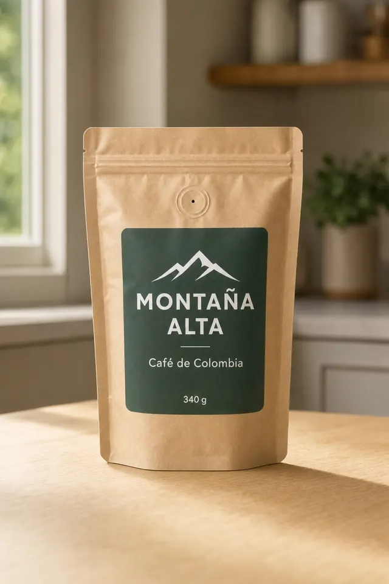
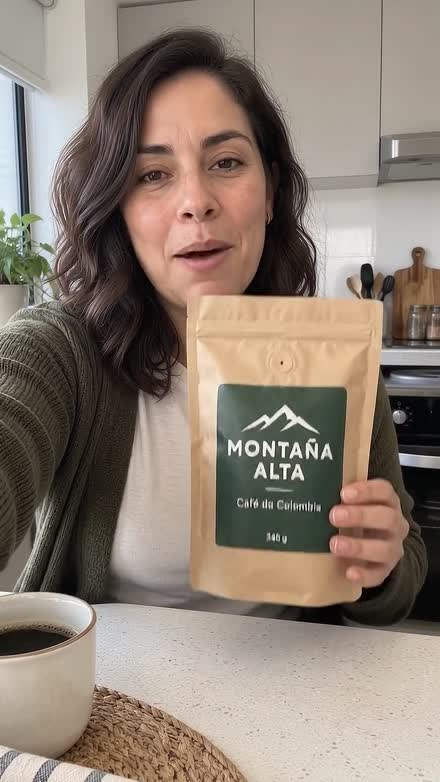
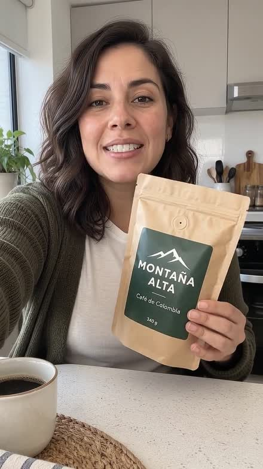
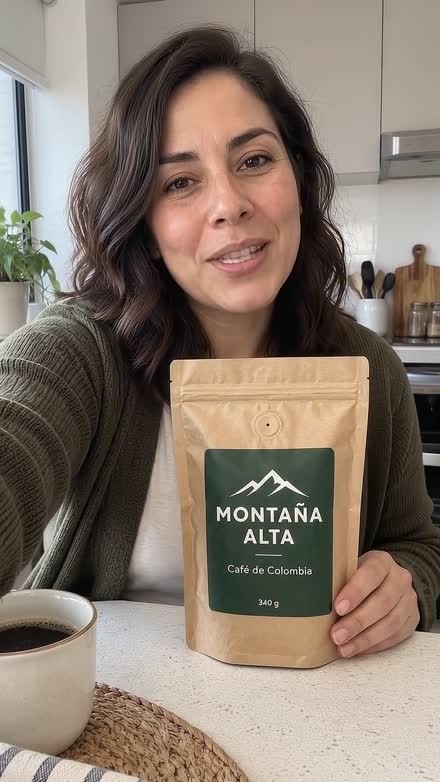
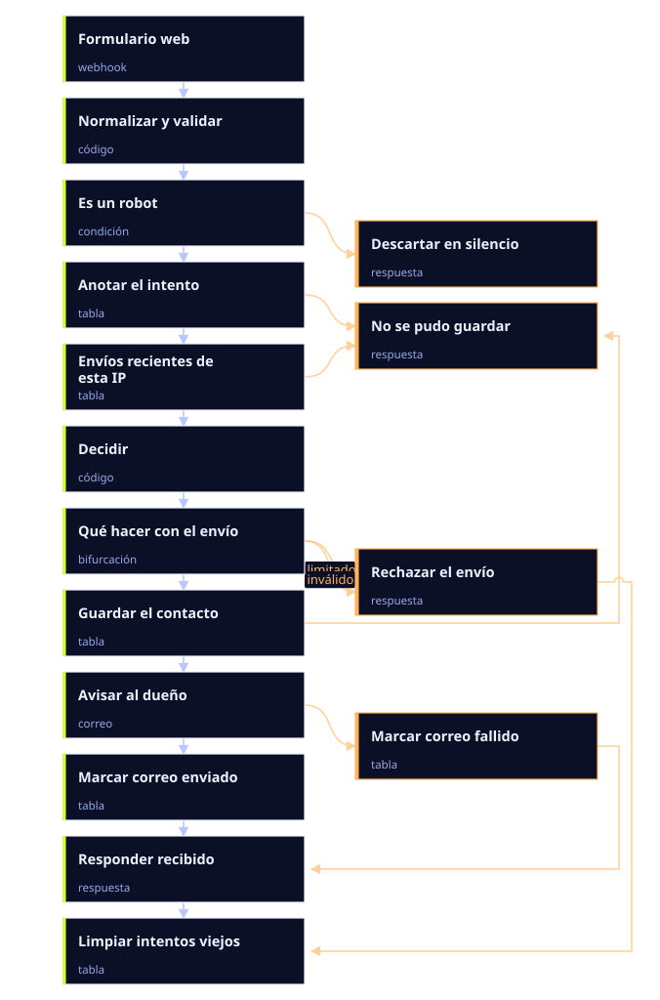

Agencia de IA · Colombia
Que la IA conteste, llame y grabe por ti.
Chatbots de WhatsApp, agentes de voz, automatización con n8n y videos UGC. Construidos aquí, para negocios que venden aquí.
Quince meses construyendo Cámara de Comercio Nequi, PSE o tarjeta
Tecnologías con las que trabajamos
Dónde atendemos a tus clientes
Con qué lo construimos
Son herramientas y plataformas sobre las que construimos: no son clientes nuestros, no nos patrocinan y no hay alianza. Cada marca pertenece a su dueño.
La prueba
No te pedimos que nos creas. Míralo.
Esto salió de una sola foto de producto. Sin set, sin cámara, sin actriz, sin edición. Diez segundos, voz colombiana, listo para pautar.
- La foto entra, el video sale. Tú subes la imagen que ya tienes.
- Voz colombiana, no neutra. Suena de aquí porque vende aquí.
- Pruébalo antes de comprometerte. El paquete de prueba son 20 créditos —un video de 20 segundos— por $ 19.900. Los precios están aquí abajo, completos.
- Vertical y limpio. Formato 9:16 de Reels y TikTok, sin subtítulos ni texto encima: le pones los tuyos si los quieres.
1 La foto que entró

2 El video que salió



«Montaña Alta» es un producto de muestra que usamos para demostrar, no un cliente: las dos imágenes están generadas con IA. La de arriba es la foto de catálogo que recibiríamos como entrada, del mismo envase que sale en el video. Los tres fotogramas son del video que se reproduce al principio de la página.
Qué hacemos
Cuatro cosas, y las cuatro de verdad.
Tres se cotizan según lo que necesites, y la cotización va por escrito antes de empezar. El cuarto tiene precio público y lo puedes comprar hoy mismo, sin hablar con nadie.
01 — Conversación
Chatbots de WhatsApp con IA
Atienden, responden dudas, toman pedidos y pasan a una persona cuando toca. Sobre la API oficial de WhatsApp, con el historial y las reglas de tu negocio.
¿Lo quieres ver con tus productos y tus respuestas? Te lo montamos de muestra.
Cuéntanos qué necesitas → Se cotiza según alcance- Clienta · 8:42 p. m.
Hola, tienen la crema de 500 ml?
- Bot
Sí, quedan 6. Vale $ 68.000 y llega mañana a Bogotá. ¿Te la aparto?
- Clienta
Sí porfa. Puedo pagar con Nequi?
- Bot
Claro. Te paso el link de pago y te confirmo el envío apenas entre.
- Pasa a una persona
«Quiero devolver un pedido» — eso no lo decide el bot: entra Laura, del equipo.
02 — Voz
Agentes de voz que llaman y contestan
Un número que atiende a cualquier hora, confirma citas, hace seguimiento y deja el resumen escrito. Habla como una persona de aquí, no como un contestador.
¿Quieres oír uno antes de decidir? Te lo enseñamos funcionando, con tu caso.
Cuéntanos qué necesitas → Se cotiza según alcance- 00:02Agente
Buenas, le llamo de la clínica para confirmar su cita del jueves a las 10.
- 00:09Paciente
Ay, el jueves no puedo. ¿Habrá algo el viernes?
- 00:14Agente
El viernes tengo 9:30 y 3:00. ¿Cuál le sirve?
- Resultado
- Cita movida al viernes 9:30
- Duración
- 41 segundos
- Queda
- Resumen escrito y audio, en tu calendario
03 — Automatización
Procesos conectados con n8n
Lo que hoy haces copiando y pegando entre el WhatsApp, el Excel y la pasarela de pagos, hecho solo. Sin cambiar de herramientas: conectamos las que ya usas.
Cuéntanos qué proceso te come el día y te decimos si se puede automatizar.
Cuéntanos qué necesitas → Se cotiza según alcanceUn pedido por chat, por ejemplo, suele quedar así:
- WhatsApp
entra el pedido
- IA
lee qué pidió y cuánto
- Sheets
lo anota y descuenta inventario
- Wompi
cobra y espera la confirmación
- WhatsApp
avisa que va en camino

Dieciséis pasos y veinte conexiones, tal y como están construidos. Las cajas naranjas son lo que puede salir mal —un robot, demasiados envíos de la misma IP, un correo que no sale— y está contemplado. Lo que montamos para un negocio tiene esta forma: el disparador cambia, la fontanería no.
04 — Video
Videos UGC con IA
De una foto de producto a un video vertical con voz colombiana, listo para pautar en Meta y TikTok. Es el único servicio con precio público y compra directa.
Ver precios y comprar →- Pones
- Una foto de tu producto
- Te llevas
- Un video vertical 9:16, con voz colombiana, listo para pautar
- Dura
- De 10 a 30 segundos, lo eliges tú
- Cuesta
- Desde $ 19.900 el paquete de prueba, aquí abajo
El video del principio de esta página salió así, de una sola foto.
Precios
Paquetes de video, en pesos colombianos.
Un crédito es un segundo de video. Se compran una vez y no vencen; no hay suscripción. El porcentaje de cada fila es lo que baja el precio por segundo frente al paquete de prueba: en el más grande, un video de 20 segundos sale por $ 17.000. Los otros tres servicios se cotizan según el alcance.
| Paquete | Créditos | Te alcanza para | Precio COP | Por segundo | Comprar |
|---|---|---|---|---|---|
| Prueba | 20 | 1 video de 20 s | $ 19.900 | $ 995/sprecio base | Comprar |
| Emprendedor | 60 | 3 videos de 20 s | $ 56.900 | $ 948/s−4,7 % | Comprar |
| Crecimiento Nuestra recomendación | 150 | 7 videos de 20 s | $ 134.900 | $ 899/s−9,6 % | Comprar |
| Escala | 400 | 20 videos de 20 s | $ 339.900 | $ 850/s−14,6 % | Comprar |
- Los créditos no vencen.
- Sin suscripción ni permanencia.
- Si un video falla, te devolvemos los créditos automáticamente.
- Pagas con Nequi, PSE, tarjeta o botón Bancolombia, a través de Wompi.
- El precio de cada paquete es el valor total que pagas: no sumamos cargos adicionales.
Lo dicen quienes compraron
El primer video superó las expectativas. En este medio pocas veces uno encuentra herramientas realmente útiles
Carlos J.Cliente PhinodIA
Por fin una plataforma hecha para latinos. Estos paquetes son muy accesibles
DavidCompró su paquete
¡Quedó súper! Es muy agradable
LeonardoTienda Clio 333
Son opiniones de clientes del servicio de video, el único de los cuatro con tienda y compra directa.
De los chatbots y los agentes de voz no publicamos opiniones: esos clientes no nos han autorizado a nombrarlos.
Cómo trabajamos
Cuatro pasos, en este orden.
Es el mismo recorrido para un chatbot que para un flujo de n8n: cambia lo que se construye, no cómo se trabaja. Y el precio se cierra por escrito antes de empezar, no al final.
01
Te escuchamos media hora
Sin presentación comercial. Queremos entender qué te quita tiempo hoy y cuánto te cuesta. Si lo que necesitas no lo hacemos nosotros, te lo decimos ahí mismo.
02
Te damos alcance, fecha y precio por escrito
Antes de empezar, no después. Si el alcance cambia a mitad de camino, se vuelve a cotizar; no aparecen sorpresas en la factura.
03
Construimos y lo pruebas tú
Lo recorres como lo recorrería tu cliente, con tus casos raros y tus clientes difíciles. Se ajusta hasta que funcione con los tuyos, no con un ejemplo de demostración.
04
Queda tuyo, y lo sostenemos
Las cuentas, los números y los flujos quedan a tu nombre. Si un día nos quieres fuera, te llevas todo y no se rompe nada.
Quiénes somos
No vas a ver aquí un muro de cuarenta logos de clientes.
PhinodIA nació en julio de 2025. A octubre de 2026 son quince meses, una empresa con Cámara de Comercio y dos clientes con proyecto.
Podríamos llenar esta página de logos grises y de cifras redondas. Casi todas las agencias lo hacen, y casi ninguna te deja llamar a los clientes que enseña.
Preferimos decirlo como es: somos pequeños, llevamos poco, y por eso cada proyecto lo lleva quien lo construye. Si quieres hablar con alguno de nuestros clientes antes de decidir, te lo presentamos.
- Fundada
- Julio 2025Quince meses a octubre de 2026
- Constitución
- Cámara de ComercioAgencia de tecnología, no entidad financiera
- Clientes con proyecto
- DosMás los compradores de la tienda de video, que sí firman sus opiniones. De los dos de chatbot y voz no damos el nombre: no nos han autorizado.
- Dónde
- ColombiaTrabajo remoto en todo el país
Empezar
Cuéntanos qué te está quitando el día.
Escríbenos con una frase sobre tu negocio y qué quisieras automatizar. Te respondemos con una hora para hablar, no con un catálogo.
Videos UGC — precio público y compra directa en la tienda.
Chatbots, voz y automatización — se cotizan según el alcance. Siempre por escrito antes de empezar.
Pagos — Nequi, PSE o tarjeta. Sin suscripción ni permanencia.
Preguntas
Lo que suelen preguntarnos.
¿La tuya no está? Escríbenos y te respondemos con una persona, no con un formulario.
Cuéntanos qué necesitas¿Cuánto tardan en montar un chatbot?
Depende del alcance, y por eso no ponemos aquí un número que luego no se cumpla. Lo que sí te garantizamos es que la fecha te la damos por escrito antes de empezar, en el paso 2, y que si cambia te lo decimos en el momento.
¿Y si al final no me sirve?
Lo pruebas tú antes de que salga a producción, con tus propios casos. Lo que no haga lo que quedó por escrito se ajusta: para eso existe esa prueba, y para eso el alcance va por escrito antes de empezar. Para los videos UGC, la política de reembolsos está publicada en la tienda.
¿De quién son las cuentas y los flujos?
Tuyos. Las cuentas de WhatsApp, de la pasarela y de las herramientas van a tu nombre desde el primer día. Si mañana quieres a otro proveedor, se lleva todo y no hay que rehacer nada.
¿Trabajan con negocios fuera de Colombia?
Sí, pero lo que hacemos mejor es lo colombiano: la voz, los modismos, Nequi y PSE, los horarios. Si vendes fuera, te lo decimos de frente antes de cobrarte.
¿Con qué herramientas se integra?
Con las que ya usas. Habitualmente la API de WhatsApp de Meta, Instagram, Google Workspace y Calendar, Shopify, HubSpot y lo que exponga una API. La plomería la hacemos con n8n.
¿Me entregan factura electrónica?
No. PhinodIA está constituida con Cámara de Comercio pero todavía no tiene RUT, así que hoy no emitimos factura electrónica: lo que queda del pago es el comprobante de Wompi. Si tu empresa necesita factura para poder contratar, dínoslo antes de pagar y te lo advertimos de frente, en vez de dejarte con el cargo hecho y el problema después.
¿Son una entidad vigilada?
No, y desconfía de quien lo insinúe sin serlo. PhinodIA está constituida con Cámara de Comercio y es una agencia de tecnología: no manejamos dinero de terceros ni somos entidad financiera, así que no nos vigila ninguna Superintendencia.